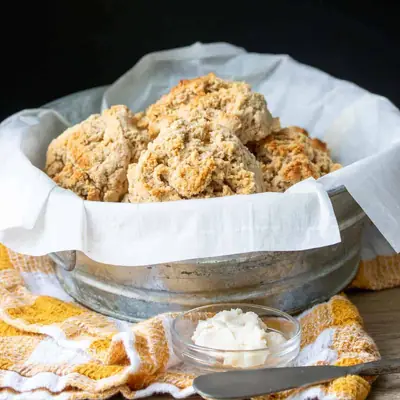

Vegan Gluten-Free Drop Biscuits

Ingredients
- 1 cup oat flour (, gluten-free if needed)
- 1 cup fine grain almond flour
- ¼ cup potato starch
- 1 tablespoon baking powder
- ¾ - 1 teaspoon sea salt (, if you like them rich and buttery tasting use 1)
- 1 teaspoon ground mustard
- ¾ cup lite coconut milk (from the can), see note)
- 4 teaspoons apple cider vinegar
- butter (, to top (optional)
- dairy free shredded cheese (, to top or mix in (optional)
Steps
- Preheat oven to 350 degrees F (175 C).
- Put oat flour, almond flour, potato starch, baking powder, sea salt and ground mustard into a medium mixing bowl. Whisk until combined and there are no clumps.
- Make a little well in the middle of the mixed dry ingredients. And pour in milk and vinegar.
- Slowly combine with a spoon or spatula, mix until just combined but don’t over mix. Fold in cheese if using.
- Allow to sit for a few minutes, use this time to put away the ingredients, put used items in the sink and wipe off the counters.
- Drop spoonfuls onto a parchment lined cookie sheet, you should get 8 biscuits.
- Bake for 28-30 minutes, ovens vary but you want them crisp on the outside. You can broil for 2-3 minutes to get the browned tops if you want them. They will cook more as they cool.
- Serve with butter if desired!
Recipe by Anjali Shah, from The Picky Eater. Saved here for personal use; the original has the full notes, tips and photos. Open original